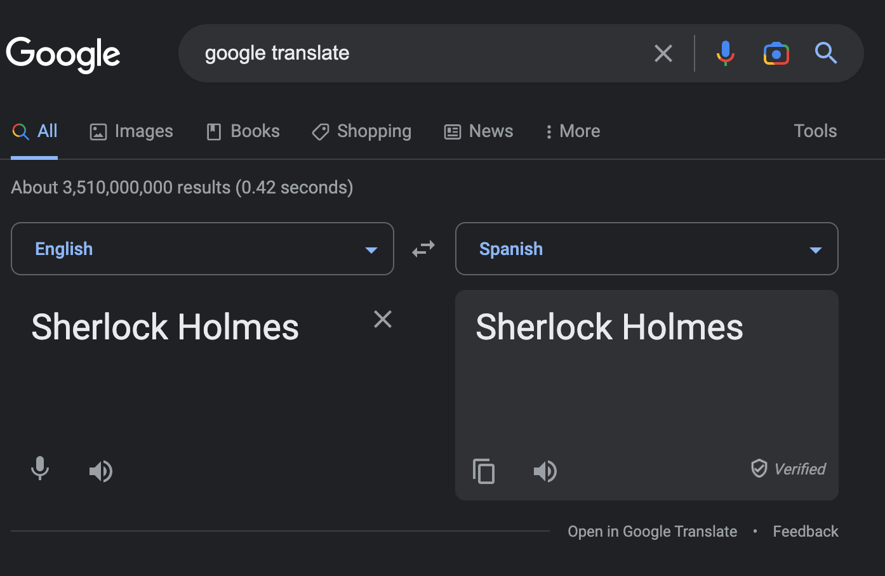
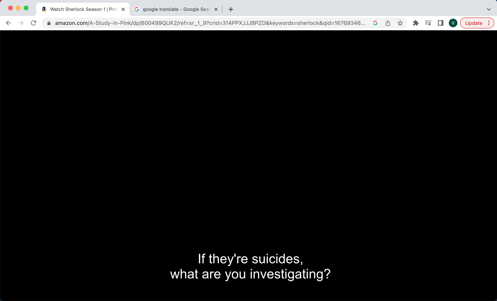

Transcribing Sherlock into Spanish

Transcription Progress (00:06:07 out of 17:40:32 transcribed)
Background
I have watched all four seasons of BBC’s Sherlock probably 5 times. I learn something new about it each time.
I have tried to learn Spanish using Duolingo, stopping and re-starting every year or so, without much success.
I don’t really recall how the thought came about but I decided to combine my love of the show with my desire to learn Spanish into one project—this one!
Setup
Using the embedded Google Translate UI and my partner’s translator-level knowledge of the language, I am transcribing every word of the show into Spanish.

In a second tab, I have the show open (with subtitles on).

I transcribe in a .txt file titled transcript.txt, documenting the following fields:
seasonnumberepisodenumbertimestamp (hours::minutes:seconds)- who is the
speaker? - the
englishtranscription of what they say - the
spanishtranslation of that noteswhich usually documents specific word translations
As an example, the first bit of dialogue in the series is John Watson’s therapist Ella asking him “How’s your blog going?” which translates to “Cómo va tu blog?” Where va = goes.
How goes your blog? I would say quite well heheheh.
season,episode,time,speaker,english,spanish,notes
1,1,00:01:30,ella,how's your blog going?,cómo va tu blog?, va = goesWhat I’m Learning
I’ll write in this blog post some examples of the translations and how I’m thinking through the process, as well as what I’m learning from discussions with my partner.
Three main themes I’m seeing so far about translating from English to Spanish:
- which words to use depends a lot on context.
- words that sound the same but mean different things will sometimes have different emphasis.
- a word that is technically correct may not be used frequently in conversation.
I’m not quite sure how to best document what I’m learning so I’ll just start writing.
Ella: “You haven’t written a word, have you?”
Something I enjoy doing is translating the Spanish back into English without changing word positions. The benefit of this exercise of translating and translating back is that it reveals (or focuses my attention on) nuances I wouldn’t otherwise be aware of.
English: You haven’t written a word, have you?
Spanish: No has escrito una palabra verdad?
Back to English: Not you have written a word true?
I asked my partner how she would translate it and she said: No has escrito ni una palabra, verdad?
Which translates to: You haven’t written not even a word, true?
It bothers me that I don’t know why in English the question ends in have you? but in Spanish it ends with true?. Of course this may just be how Spanish works or how conversational Spanish works.
I asked my partner how you would say just have you? in Spanish and it’s lo has?
Google Translate aligns with this when it translates from Spanish to English:
Spanish: No has escrito ni una palabra lo has?
English: You haven’t written a word, have you?
But recommends ending with verdad? when I translate from English to Spanish.
Lestrade: “Well, they all took the same poison.”
Something else I’ve enjoyed and learned from is watching how a translation changes as you type the full sentence in Google Translate.
For example when translating from Spanish (pues, todos tomaron el mismo veneno) to English (well, they all took the same poison):
| Spanish | English |
|---|---|
| pues | well |
| pues, todos | well, everyone |
| pues, todos tomaron | well, they all took |
| pues, todos tomaron el | well, everyone took |
| pues, todos tomaron el mismo | well, they all took the same |
| pues, todos tomaron el mismo veneno | well, they all took the same poison |
What I’m observing might have less to do with how Spanish works and more to do with how Google Translate works. Although some words seem interchangeable (todos seems to mean everyone or they all).